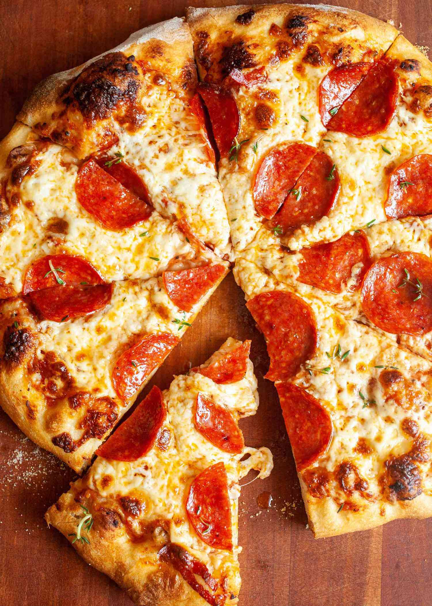

Peppa Pig's Pizza

A sexy slice of pizza covered in marinara, cheese and most importantly PEPPA. When eating this you will be content
knowing you'll never have to hear her annoying ass voice ever again. Love it. Savor it. Do it.
Ingredients
Pizza Sauce:
- 1/2 cup water
- 1 tsp crushed dried oregano
- 1 tsp crushed dired basil
- 1/2 tsp garlic powder
- 1/2 tsp onion powder
- 1/2 tsp sugar
- 12 oz. tomato paste
- 1/2 tsp salt
- 1/4 tsp black pepper
Pizza Crust:
- 3 1/4 cups all purpose flour
- 1/4 oz yeast
- 1 tbsp sugar
- 1 1/2 tsp salt
- 1 1/3 cups warm water (120 - 130 F
- 1/3 cup oil
Toppings:
Any toppings really but for this pizza specifically:
- Pepperoni
- 1 cup Mozzarella Cheese
Steps:
- Preheat oven to 425 degrees F
- Make Sauce: Whisk together water, tomato paste, oregano, basil, garlic powder, onion powder, sugar, salt, and pepper in a medium bowl until smooth. Set aside.
- Make crust: Combine 2 cups flour, yeast, sugar, and salt in a large bowl. Add warm water and oil; mix until well blended, about 1 minute. Gradually add remaining flour, a little at a time, until a soft, sticky dough forms.
- Transfer dough to a floured surface; knead until dough is smooth and elastic, about 4 minutes. Add more flour as needed. (If using RapidRise yeast, let dough rest, covered, for 10 minutes.)
- Divide dough in half. Lightly flour your hands, then pat each piece of dough onto the prepared pizza pans.
- Top dough with sauce, cheese, and pepperoni.
- Bake in the preheated oven until crusts are browned and cheese is bubbly, 18 to 20 minutes. Rotate pizza pans between the top and bottom oven racks halfway through baking.